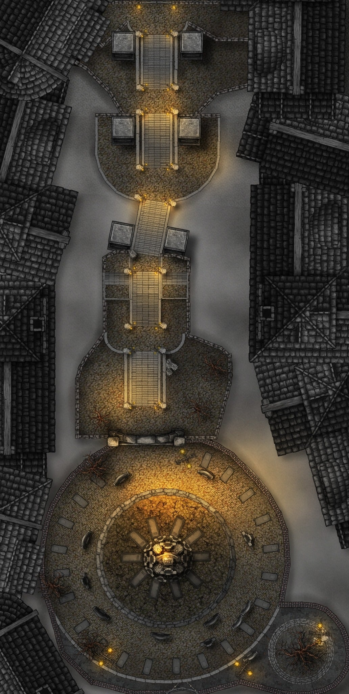
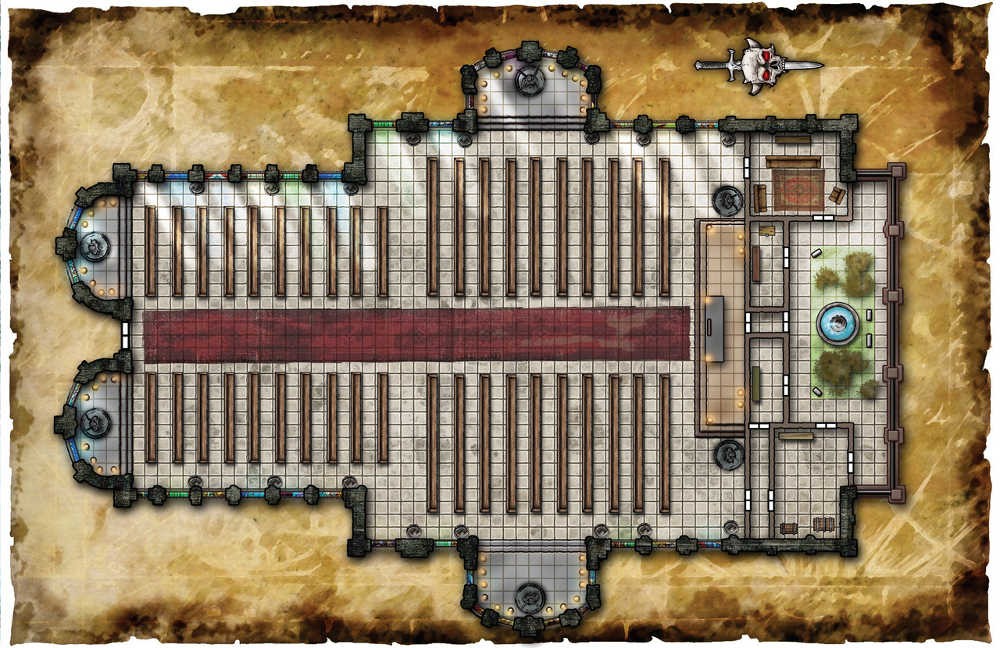

Irithyll#
Ancient city with gothic arcitecture. Dim blue light from the full moon. Eternal night here (crazy spell from vampires). DS3 inspired.
Hard to actually find, they have to pass through the shadowfell via path-of-suffering, to find it secluded in a valley.
Inhabitants are ancient undead. Vampire society in control. Hags in the sewers working for Irae as cultists to help sustain the material plane's undead.

Actually two cities crashed into each other. North parth is an old Netherese city.
Scrying#
Size of Irithyll is in population similar to Luskan, but more compact (vertical).
- tall zombies and grotesque skeletal mutations
- tveirherjar black armored skeleton
- anticipation: "fight arklem == fight the city"
Geography#
City situated on a hil, and there's a central path winding around the side of the hill up into a residential area.
At the top, amongst many mausoleum looking structures are a large arc leading into the cathedral area.
Many small streets between houses winding up and down (very up and down arcitecture, built organically over time).
Some small streets lead up to the less stable cliff faces of the mountain, can walk around there, to get a view of the western part of the city.
One path underneath leading to Irithyl dungeon. Huge crypt.
Paths wind around a lot. Can find paths to a swamp on the eastern cide.
Swamp leads to water (still < knee deep) which reveals - under one of the southern bridges - a sewer entrance. Undead drow. Path up to an active kitchen. Leads to a large cathedral central hall. Magnificent central furniture. Looks old. Many paintings of the city. Ghost fight, buttfucking archer.
Other side leads up cathedral walls in the east and out into eastern side, which also winds around other side of city. Eastern side has a elevator (many enemies that way).
Eastern side winds up in small bridges towards cathedral entrance.
Skull Lanterns everywhere. CC343
Entrance#
Need an item to pass the magnetosphere around the city;
- a ward cast by Celerom
- item granting free passage
- an audience granted with vampire council (via Celerom)

They can go to the dungeon if they know about the self-serving Irae cult below.
Undead here are generally not sentient yet (apart from the deacons), so they will attack on sight. Celerom has put in place a "lab".
Magnetosphere#
Some spells do not work within the city. Teleport, flight, plane shift, misty step, gaseous form, ethereal transit, sending across planar boundaries. There's eternal moonlight. => Ensures they have to fight their way out if the vampires do not like what they hear.
Modification: They work, but require a DC20 concentration check / DC20 arcana check to succeed one time cast. Notice that it affects subset(high roll) of Conjuration/Transmutation (low roll).
City Style: Passive Aggressive INTO Active Aggressive#
Balistas on fortress walls. Flight doesn't work anyway, but eh.
Skeletons vomitting 2d8 acid damage (but slow). Doesn't attack welcome people past church.
Vampires grant safe passage through ring.
Fire archers 2d8 fire damage (with heavy crossbows) slowly firing from vantage.
Enemies deal exorbitantly heavy necrotic damage with actual weapons.
Shadow dragon. Ancient Blue cruises over the city.
Maps#
repurpose from https://www.polygon.com/2017/1/17/14193428/dark-souls-3-maps-guide-enemies-items darksouls folder in dnd

Houses#
Hard, worn woodden tables and chairs
Dark wodden pillars. Leather chairs. White stone fireplaces. (Search victorian gothic)
Wodden.
Inhabitants are corrupted, but a few creatures alive.
Most jobs are helping the city with pathetic jobs.
Most menial jobs are people trying to make enough to partake in the rituals from the cultists so they can maintain a semblance of humanity.
The long-living undead rule over this and command an increasing army (now daemonic).
Some will know of the path to Shar (and the Skipper).
Old Church#
Where they actually get to make their case with the council. If they kill any undead, then the whole city revolts.
If that happens high up, they have an escape mission on their hand after potentially dealing with arklem. Such a setup allows them to use terrain and prioritise other undead.
If they go here without meeting The Reaver, he'll tail them in.
Secured Monstrosities#
- Elophar CR4; CC149 (ritual nalfeshnee)
- Kulmking CR9 CC244 (ritual devourer)
- Nachzehrer CR8 CC272 (ritual hezrou)
Reaver can unleash them and seal them again on demand.
Additionally, he's a pretty powerful creature on his own.
Reaver spells: Cloudkill/incin cloud, Circle of Death

Summoning Area#
Creating abyssal undead by summoning undead from the abyss and taking their powers.
Process;
- Summon Greater Demon at lvl 9 with blood circle (requires fresh killed humanoid blood)
=> CR12 Demon (slight increase homebrew) - force it to create a amulet to obey them
- Gate when it's done
- Drain its essence with Egg and unholy Lich magic
Cathedral Foyer; Vampire Council#
Undead + Zombies rule at day.
Upper cathetral at Irithyl; https://youtu.be/8ma-l-9zC3M?t=298
View down to Irithyl: https://youtu.be/8ma-l-9zC3M?t=307

Areas#
F: Blood pool. 4 statues around it. Needs to be rotated
NPC: Velma Scale#
can elevator them up to the cathedral, but wants them to steal.
archdruid; will shapeshift to a
knows of way
city npc motivation#
why will undead there want to betray arklem?
- some vampires: knows the cityis being filled with demons, "no class" (what is this, pre-sundering horror novel?)
- carnivores: conflicting council messages disgraceful? are we even doing this?
Conductor like figure to guide them to Shar#
NPC: The Figurehead / Named Female#
The spirit trapped in a galleon
The Skipper#
A night sailing vampire that was taking things to East long time ago. Ancient.
Knows the history of Shar.
Takes you on a small wodden rowboat. He doesn't need to breathe underwater.
- Can take you there if you bring him a humanoid child that bleeds
Intimidation / Kidnapping can work. And he won't be keen on it, but ultimately he will respawn.
You can only threaten him so much.
Unless they figure out where he respawns and stake that.
If they threaten him to take them there, they will temporarily die as they pass through to the shadowfell.
The Reaver (call me Keanu)#
Reaper like figure. Speak confusingly. Old man.
Used to clean lost souls, out of a job now because lost souls are corrupted and infused with demons.
- "ay, lost souls, you be not, but beware not, i won't taddle on ya, if ya won't"
- "ay, this is not a place for you (morday); or you (gw), but maybe you (faey)."
- "i don't know all the circumstances of what leads people to end up here"
- "but what i do know that it takes some getting used to chuckles"
if talking about Arklem / Larloch he will shush them in, and give some info.
Ultimately wants their blood as part of a better summoning ritual in the Church.
Will want them to put an end to the unnatural setup
The Cleric#
Maybe put him in Shar.
Can "cure" people of the flesh.
But will actually just try to light a fire and place them to roast with salt. To cure the meat.
- if asked to "fix" someone, he'll say "i'll make them useful again"
https://www.reddit.com/r/dndmemes/comments/n97cmu/beware_the_lizardfolk_cleric_with_the_chef_feat/
Annoying Skeleton Duck#
Quacks near them in one alley. Alerts the Reaver.
Council Members#
Discussing in A. All happy to take a fight there should it happen.
arklem in 10-X will try to prevent them from fucking with their coffins.
Arklem is using Geas to make them confused about any deals from celerom, and is using them to have it take as long as possible. That's why the meetings take place outside their hideout. Arklem's phylactery is in velddrinnsshar.
-
Sabien (patrician nobleman from 200yo) CC365 CR10. For sustainability. Tempted by vampirism in neverwinter. He is fine with the new artificial blood.
-
Eleanor; Vampire Priestess CC367, CR8 who do not fully appreciate the new lifestyle, but her lust for revolution does not have a voice with the populus (mostly skeletons). erika ishii lolth voice.
-
Dorian - Past king of Neverwinter. Skeletal Monarch CC341 CR9 (pompus voice, a bit stephen fry like when he was the servant)
E: I am so bored. When is extender going bring the fresh blood?
S: Do not be disrespectful, you know he's working hard.
D: Yes, yes, safety first and all that, but it would be nice if our first arrivals were a little less demonic.
E: Honestly, that part is rather fascinating, if perhaps a little paranoid. Who among the living is going to want to enter Irithyll?
S: The wizard friend of the Supreme Matron perhaps? As long as they are emissaries of the undying-soul, we must treat them to council.
Greets them respectfully.
RE: Arklem. If they prod too much they will get angered, they are not supposed to know that much.
"That is an internal matter."
"You are venturing beyond your ambassadorial roles here."
Suggests they take up things the Matron.
They will evoke a hostile response by venturing past them or digging too deeply.
Guards; Vampire Knight CC379 CR11 + Zombie Lord; CC394 CR5.
"Church; invaders" only words.
Upper City#
Past old church. Harms anyone on sight (elevator is safe though).
River Lords CC327 swim in water drains. Sentient. Past colonial land owners in neverwinter from when
- Corpse Mound TOB69 CR11
- Undead Phoenix. CC361 CR12
- Jiangshi CC230 CR6
- Bone Swarm TOB41 CR10
Cathedral#
arklem's domain.
Entrance is the royal area front.
Cathedral is the abandoned remains of the church of Larloch, now used as a "council".
Partly sealed off and left as a place for the useless rulers in a royal foyer.
Cathedral Lore#
Library East#
Books from Larloch's time. 400DR first arrival. Elven mage from the east who settled here. Originally to study the place and its biology. Dense library on his discoveries. Taken maybe decades to do all this research, all seem to be from roughly this 400-420DR time period.
Books from third arrival. 494DR. He has brought a pet behir, descibed initially as a lovely companion. Flesh eating. But as the book goes on, it's decreasingly described on good terms. Vile creature. At various points you can tell that he's experimenting on it to get it to alter its behaviour, but he's not having success. "After that one minor drain, she's not interested at all, and has moved into crevices in the floor and into the caves below.
He's clearly pretty old at this point. Grown to like the white lillies and the way the moonlight always hits things.
Library West#
Books on the dark seldarine???
Books from 540DR. Calamity. City crashes (turns out it was a netherese City).
Books from later. 1100DR helped an dark elven cleric with magic. Fascinating magic of a completely different elven pantheon. Never before combined with standard magic.
Prophecy books: 3 undying souls with vengeance achived can be sacrificed to infuse her with Power.
Already taken Larloch. Taken Valindra? Taking Felgolos. Will sacrifice themselves if they have to.
They took some journals.
Spell describing an afterbourner
Library South#
Sealed the caves.
Xinleal / Telemount
Was suspicious of WIzard friend and his Cleric buddy
B: Undying Soul Visage#
Can be used in the blood fountain.
Also one central statue of Arklem, Irae, Koth:
- "marble: two hands in a globular grasp (like control the world type grasp)"
- "quartz: one etched sphere, and a hovering curved blade above it (no hilt, just flying perfectly above the sphere)"
- "lamprey eel like mouth etched into the sphere"
It's one of the few symbols of the undying-soul.
Blood Fountain#
There's a blood fountain which can be drained that leads to irithyll-oubliette.
It contains magically constructed statues of three creatures. Arklem, Irae, Larloch. (but without mods hard to tell: INV 25)
They brought the symbol of undying soul to the fountain, grabbed someone else's blood draped it across the bladeto unlock it.
Sewers#
Worshippers of Irae granting her divine powers on the lower end.
These covens not only grant magic stability throughout the city, they feast on anything that comes near, can tempt children in certain shadowy forests with portals into the sewers.
Normally, the deacons would worship Kiaransalee, but Irae wants the powers directly.
in swamp; Drowned Maidens CR5 TOB163 (long haired roper girls in white dresses)
could also put some Shrouds (CR⅛ TOB438) squire specters with strength drain
- Swarm of Gorgon CR5 MM171 (5x bulls) charges towards them
- Night Hag Coven MM177-178 (shared spell casting) Sitting between a bunch of non-casting night hags.
Casters shifts between them. 9 or night hags in the middle. ~100HP each.
One Hold Persons one of them. Another Polymorphs another. Then the last have to free them.
Past Crones of Thanatos.

- Nightwalker MTF216 CR20 boss.
- 2x Eidolon MTF194 CR12 temple protectors
Quest: One reclusive hag/crone immune to the magic via tattoos. Offers if they do something shady.
Underdark passage#
Can spot takeover parallel by Zuggtmoy. Plus koth's domain.
Rejected#
DS3 Themed Mobs#
Some good stats came up for these later
https://www.reddit.com/r/UnearthedArcana/comments/pmre7k/dark_souls_3_compendium_5e_invaders_of_irithyll/
Vampire Vegetarian Plot#
Celerom wants to reform them into vegetarians. But they are old fashioned. One will not change at all, but the younger ones MIGHT. The king COULD betray them and destroy the charm from Celerom to force them out.
Arklem not concerned with sustainability atm, he's a tactician (happy to let people think this is the real deal).
S: "i keep saying this, but this is indeed a fresh start for us, to inhabit peacefully without all that judgement from the living."
E: "well it is nice being actually revered in the city"
E: "but don't you miss it; the draining from a live one, having their live force flow into you?"
P: "well, you see, the populus is not going to appreciate such draining in the long run"
D: "what you need to do is blame it on a night hag, so the population never knows who the real enemy is"
E: "why are you always using women as your goto-scapegoat?"
E: "why do you never use a goblins or trolls?"
D: "well, shake face excuse me, it was just the first that came to mind."
S: "everyone. calm down. have you not eaten in a while? we have company."
Plot died because Celerom won't return.